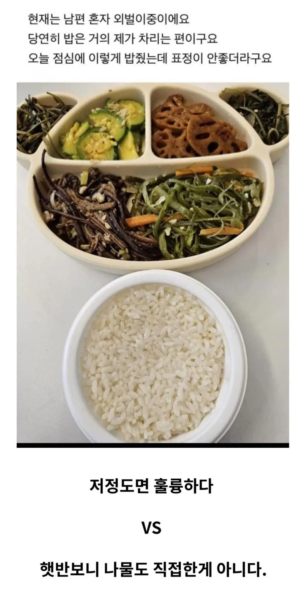

https://bbs.ruliweb.com/best/board/300143/read/77505095

https://bbs.ruliweb.com/best/board/300143/read/77505095

어디 반찬가게 4팩에 만원짜리사온거지ㅋㅋ
나물 저리 할 성격이면 무조건 고기찬이든 생선이든함
왜냐면 그게 더 쉽기도하고 중간에 같이하기좋으니깐
맛있게 만들기 제일 쉬운게 고기들어간 반찬인데
나물류만 저렇게 줬다는거 보면 지가 만든건 아닐거 같다
사운거 대충 담아서 햇반 돌려주면
넌 집에서 하는게 뭐야? 라고 물어봐 달라는건가 싶기도 하고....
이혼
장난 똥때리나

나물이 은근히 만들려면 손 많이감.
손 많이 가는건 인정하는데 남편이 원하는 반찬이 아닌데도 아내가 꾸역꾸역 만들면서 내 정성을 몰라주냐 이러는 상황이면?
조합이딱 비벼먹는건데 저따위로 담아주면 삔또나가지
반찬가게에서 산게 아니라 직접 한거면 진짜 대단한 사람
하다못해 스팸이라도 좀 구웠다면...
나물은 좋은데 햇반은 에바임 햇반을 써도 밥그릇에 옮기던가
햇반은 문제가 아닌데 반찬꼬라지 저러면 그냥 안먹고 나가서 삼각김밥 사먹음
나물도 좋아하고 고기도 좋아하는 나한테는 중박정도
고기없는건 선넘엇지
나물도 좋아하는데 저건 좀ㅋㅋㅋ
사온 반찬 같은데
반찬 저렇게 하면서 햇반을 줄 이유가 없음
결정적으로 당근의 유무인데
미역 나물에만 당근 넣었다? 이거 말이 안됨
딱봐도 사온거 티나는 느낌임
나 외벌이인데 반찬 저지랄 나면
혹시 생활비 어디 도박하는데 썼냐고 진지하게 물어봄
나물이 손이 좀 가는건 맞는데 너네 나물 매끼니마다 무쳐서 먹는 새끼 있냐?
그냥 딱봐도 냉장고에서 소분해서 내놓은건데 구운요리나 따뜻한 국물이라도 하나는 있어야지
밥꼬라지도 밥하기싫어서 햇반 내놓은거 봐라
뭐 미안해라도 하던가 표정이 안좋더라구요는 그냥 험한말 나오게하네
엠창 초코첵스 말아준 수준의 밥인데
고추장이랑 들기름
큰 그릇에 고추장 참기름 계란후라이 같이 줬어야지
고기 싫어하는 내게는 극호 식단이네.